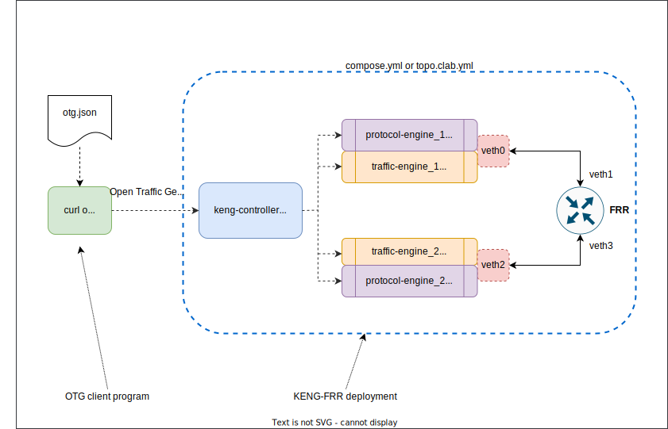
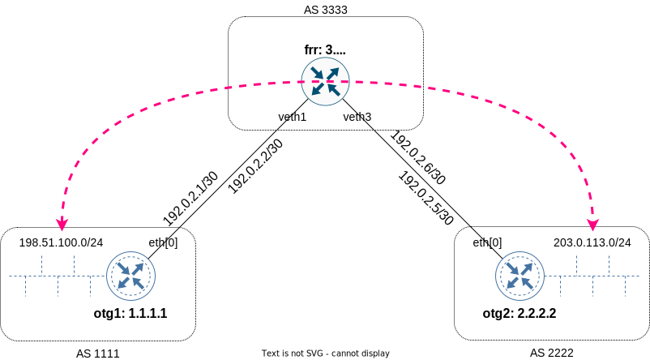

Ixia-c ARP, BGP and traffic with FRR as a DUT
Overview
This lab demonstrates validation of an FRR DUT for basic BGP peering, prefix announcements and passing of traffic between announced subnets. To run OTG protocols and flows, Ixia-c Traffic and Protocol Engine are used.
The same setup can be brought up using one of two methods:
Also, the same OTG test logic can be executed using one of two OTG clients:
Each method has its own benefits. With curl, you can try each individual OTG API call needed to complete the test. On the other hand, otgen demonstrates how all these steps could be easily executed with a single command. By comparing with curl get_metrics or get_state requests output, you can better understands the logic otgen is using to wait for the results of previous API calls to converge or complete. Finally, you can use otgen run source code as a starting point for custom test logic you could develop using gosnappi library.
Lab configuration
Diagram

Layer 3 topology and generated traffic flows

OTG
The lab uses otg.json configuration file with the following properties:

To request Ixia-c to use ARP to determine destination MAC address for a flow f1, the following flow properties are used. The dst parameter in the packet section uses auto mode. In addition, tx_rx section has to use names of emulated devices' IP interfaces, as in "tx_names": ["otg1.eth[0].ipv4[0]"].
"flows": [
{
"tx_rx": {
"choice": "device",
"device": {
"mode": "mesh",
"tx_names": [
"otg1.eth[0].ipv4[0]"
],
"rx_names": [
"otg2.eth[0].ipv4[0]"
]
}
},
"packet": [
{
"choice": "ethernet",
"ethernet": {
"dst": {
"choice": "auto",
"auto": "00:00:00:00:00:00"
},
"src": {
"choice": "value",
"value": "02:00:00:00:01:aa"
}
}
}
]
}
]
Quick start
-
Clone this repository
-
To run all the steps below at once using Docker Compose, execute:
-
To use Containerlab option, run:
Prerequisites
- Linux host or VM with sudo permissions and Docker support
- Docker
curlcommandwatchcommand (optional)jqcommand (optional)
Install components
-
Install
docker-composeand add yourself todockergroup. Logout for group changes to take effect. -
For Containerlab use case, install the latest release. For more installation options see here.
-
Install
otgentool, version0.6.2or later. -
Make sure
/usr/local/binis in your$PATHvariable (by default this is not the case on CentOS 7) -
Clone this repository
Docker Compose option to deploy the lab
-
Launch the deployment using Docker Compose
-
Make sure you have all five containers running. The result should look like this
CONTAINER ID IMAGE COMMAND CREATED STATUS PORTS NAMES 0ea1e56720ac ghcr.io/open-traffic-generator/ixia-c-protocol-engine:1.00.0.337 "/docker_im/opt/Ixia…" 3 seconds ago Up 3 seconds cpdp-frr_protocol_engine_1_1 44f4c9fb8b3e ghcr.io/open-traffic-generator/ixia-c-protocol-engine:1.00.0.337 "/docker_im/opt/Ixia…" 3 seconds ago Up 3 seconds cpdp-frr_protocol_engine_2_1 6e50d4cad6a6 ghcr.io/open-traffic-generator/keng-controller:0.1.0-3 "./bin/controller --…" 4 seconds ago Up 4 seconds cpdp-frr_controller_1 7fe400f12196 quay.io/frrouting/frr:8.4.2 "/sbin/tini -- /usr/…" 4 seconds ago Up 3 seconds cpdp-frr_frr_1 2a7e1c124cbd ghcr.io/open-traffic-generator/ixia-c-traffic-engine:1.6.0.85 "./entrypoint.sh" 4 seconds ago Up 3 seconds 0.0.0.0:5556->5556/tcp, :::5556->5556/tcp, 0.0.0.0:50072->50071/tcp, :::50072->50071/tcp cpdp-frr_traffic_engine_2_1 cbc0a64278cc ghcr.io/open-traffic-generator/ixia-c-traffic-engine:1.6.0.85 "./entrypoint.sh" 4 seconds ago Up 3 seconds 0.0.0.0:5555->5555/tcp, :::5555->5555/tcp, 0.0.0.0:50071->50071/tcp, :::50071->50071/tcp cpdp-frr_traffic_engine_1_1 p -
Interconnect traffic engine containers via a veth pair
-
Check traffic and protocol engine logs to see if they picked up veth interfaces
Containerlab option to deploy the lab
-
Launch the deployment using Containerlab
Run tests, curl option
-
Apply config
-
Start protocols
-
Fetch ARP table
-
Fetch BGP metrics (stop with
Ctrl-c) -
Fetch BGP prefix announcements - TODO this doesn't show the actual announcements
-
Start transmitting flows
-
Fetch flow metrics (stop with
Ctrl-c) -
Fetch port metrics
Run tests, otgen option
-
Use one
otgen runcommand to repeat all of the steps above. Note--rxbgp 2xparameter. We use it to tellotgenit should wait, after starting the protocols, until twice as many routes were received from the DUT, than were advertised by KENG. For our lab configuration it would be the signal that BGP protocol has converged. In other setups this parameter might be different. -
To format output as a table, use the modified command below. Note, there will be no log output in this case, so be patient to wait for the table output to appear.
Destroy the lab
-
To destroy the lab brought up via Docker Compose, including veth pairs, use:
-
To destroy the lab brought up via Containerlab, use:
Credits
connect_containers_veth.shcopyright of Levente Csikor, with modifications to replaceifconfigwithip link.